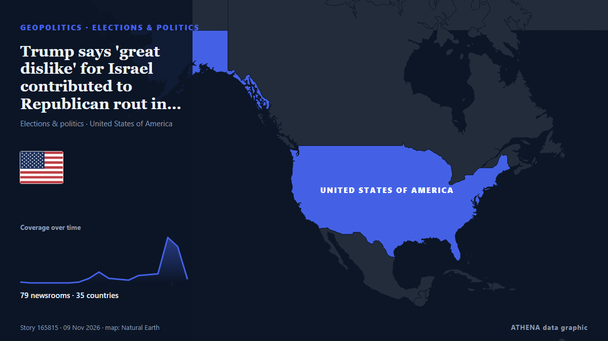

Trump says 'great dislike' for Israel contributed to Republican rout in midterms

El-Sayed urges distinction between Judaism and Israel, rejecting claims that criticism of Israel is antisemitism. de Express Tribune
Relayé de façon indépendante par 93 médias dans 40 pays depuis le 5 nov. ; premier à l'annoncer : Express Tribune ; la couverture faiblit. ATHENA juge le risque élevé (7.0/10), surtout en raison de la gravité des dommages décrits et de sa portée géographique et sectorielle. La confiance est de 90 % (élevée) : 93 médias indépendants le confirment, avec une fiabilité moyenne des sources de 74 %. Médias par pays : États-Unis (10), Israël (3), Afrique du Sud (3). Couverture : du 5 nov. au 8 nov., 78 heures.
Pourquoi c'est important: Les évolutions de sécurité et de diplomatie peuvent déplacer alliances, échanges et marchés bien au-delà des pays directement concernés.
Ce qui a changé : 131 nouveaux articles de 77 rédactions dans les 24 heures jusqu'au 10 nov..
Premier titre : Abdul El-Sayed backs Trump’s call to cut Israel aid, says he is willing to work with president
Les titres sont affichés en anglais, tels que publiés.
Comment lire cette page
- Ce que vous lisez
- 93 médias dans 40 pays ont rapporté cet événement. Les reportages ci-dessous sont classés selon leur ordre de parution ; chaque titre ouvre l'article original. ATHENA n'écrit aucun reportage.
- Notre lecture
- Pour mémoire — Les reportages décrivent une affaire terminée, intérieure, commerciale ou personnelle. Nous la consignons pour que vous voyiez qui l'a rapportée et quand. Nous ne suivons pas ici de risque de conflit plus large.
- Quelle base de preuves
- Limitée Considérez cette page comme un premier compte rendu.
Après retrait des doublons, des éléments hors sujet et périmés, 9 des 39 reportages listés sont retenus ; 33 % des titres correspondent à l'événement.
Environ 44 % des titres relèvent de l'analyse ou de l'opinion plutôt que du simple compte rendu.
- Ce que cela ne veut pas dire
- ATHENA mesure la façon dont un événement est rapporté, pas sa véracité. Ce n'est ni une prévision, ni un jugement sur qui a raison, ni un conseil.
- Ce qui la changerait
- Des reportages d'autres médias indépendants montrant une évolution différente, ou une confirmation ou un démenti ferme d'une source officielle.
Lecture R2 · actualisée à chaque mise à jour de cette page. ATHENA n'a pas encore publié de bilan de ces lectures ; il sera lié ici le moment venu.
En un coup d'œil
Sélectionné, noté et rédigé par la méthodologie publiée d'ATHENA. Aucun rédacteur n'intervient sur un événement en particulier. Comment il est produit ›
| 05 Nov 11:00 UTC | 1 |
|---|---|
| 05 Nov 17:00 UTC | 0 |
| 05 Nov 23:00 UTC | 0 |
| 06 Nov 05:00 UTC | 0 |
| 06 Nov 11:00 UTC | 0 |
| 06 Nov 17:00 UTC | 0 |
| 06 Nov 23:00 UTC | 1 |
| 07 Nov 05:00 UTC | 5 |
| 07 Nov 11:00 UTC | 12 |
| 07 Nov 17:00 UTC | 5 |
| 07 Nov 23:00 UTC | 5 |
| 08 Nov 05:00 UTC | 3 |
| 08 Nov 11:00 UTC | 8 |
| 08 Nov 17:00 UTC | 9 |
| 08 Nov 23:00 UTC | 11 |
| 09 Nov 05:00 UTC | 51 |
| 09 Nov 11:00 UTC | 42 |
| 09 Nov 17:00 UTC | 24 |
| 09 Nov 23:00 UTC | 9 |
| 09 Nov 04:24 UTC | 6.3 |
|---|---|
| 09 Nov 14:30 UTC | 7.0 |
| 09 Nov 16:26 UTC | 7.7 |
| 09 Nov 16:32 UTC | 7.0 |
| 09 Nov 16:40 UTC | 7.7 |
| 09 Nov 16:50 UTC | 7.0 |
| 09 Nov 17:00 UTC | 7.7 |
| 09 Nov 19:42 UTC | 6.8 |
| 09 Nov 23:39 UTC | 7.4 |
| 10 Nov 03:04 UTC | 7.1 |
| 10 Nov 03:04 UTC | 7.0 |
Pourquoi ces chiffres
Importance
Risque
Confiance
La couverture : qui l'a annoncé, et quand
titre tel que publié · ouvre l'original- Express Tribune · PakistanAbdul El-Sayed backs Trump’s call to cut Israel aid, says he is willing to work with president
- The Jerusalem Post · IsraëlPro-Israel conservatives blast JD Vance for blaming Israel after GOP midterm losses
- The Scotsman · Royaume-UniWhat landslide defeat for Donald Trump’s Republicans means for the world – Dr Andrew Gawthorpe
- RTÉ News · IrlandeTrump gets ready for a battle on multiple fronts
- Al Jazeera English · QatarQatari PM says US willing to seek solution to war with Iran
- Tehran Times · IranIran announce 12-man squad for AFC Beach Soccer Asian Cup
- The Hill · États-UnisTrump sends 'clear message' to Democrats with Miller promotion
- The Straits Times · SingapourWith an eye on 2028, Vance seeks to inherit Trump’s base and shed his baggage
- IOL · Afrique du SudGreytown man cries, blames election defeat for drunk driving when arrested by RTI
- Tehran Times · IranIran U17 team arrive in Laos for AFC U17 Asian Cup qualifiers
- Pew Research · États-Unis📊 How did the midterm polls perform?
- Kyiv Post · UkraineUS Midterms: What Is the Global Impact?
- Egypt Independent · Égypte‘Like a bolt from the blue’: Israel’s president shocked by Trump announcing end of aid
- People Daily · KenyaDemocrats face major test to reverse Trump’s foreign aid cuts as Africa counts the cost
- The New Arab · INTStephen Miller: What Trump's new chief of staff means for MENA
- IOL · Afrique du Sud‘My party lost the elections’: KZN motorist breaks down after drunk driving arrest
- Middle East Eye · INTUS midterms: Not even Trump's Israel aid stunt could rescue the Republicans
- Politico · États-UnisWhy this GOP governor thinks his party got ‘worse than a butt whipping’ on Tuesday
- The Hill · États-UnisThe ascendency of JD Vance
- The Hill · États-UnisPresident Trump: Forget the midterms and finish the job in Iran
- Anadolu Agency (English) · TurquieIran warns US of 'devastating response' if Washington starts war
- The Hill · États-UnisRebuilding US foreign policy after Trump
- The Straits Times · SingapourNew Democratic heroes and Republican stalwarts gear up to succeed Trump in 2028 race
- The Jerusalem Post · IsraëlPresident Trump: History will remember Iran, not the US midterms - opinion
- Middle East Eye · INT'You lost war and election': Iran's Rezaei warns US of 'devastating response'
- ThisDay (Nigeria) · NigeriaLessons from US Midterm Elections for Nigeria in 2027
- Indian Express · Inde‘You lost the war and the election’: Iran hardliners press Trump for more
- The Business Standard (Bangladesh) (working feed) · BangladeshTrump’s dilemma regarding Iran: More war, or a settlement?
- Rolling Stone · États-Unis‘SNL’ Weekend Update Drags Trump Over Midterm Drubbing, Stephen Miller Promotion
- Al Jazeera English · QatarIs unconditional support for Israel becoming a liability for Republicans?
- IOL · Afrique du SudMotorist cites party’s election defeat after drunk-driving arrest in KZN
- The Independent · Royaume-UniTrump is ending military aid to Israel – what difference will it make?
- The Jerusalem Post · Israël‘No good options’: Iran war caught between Trump's midterm troubles, Israel's election shake-up
- Fortune · États-UnisRepublicans saw Indian Americans as ‘natural conservative voters.’ But Trump’s second term undid the gains as their support for Democrats shot up
- Gulf News · Émirats arabes unisIran hardliners smell victory after Trump’s midterm defeat: Is Tehran raising the price of peace?
- Middle East Eye · INT‘Spiritual darkness’: US ambassador to Israel says critics of Iran war are blinded by Satan
- Middle East Eye · INT‘Spiritual darkness’: US ambassador to Israel says critics of Iran war are blinded by Satan
- Forbes Business · États-UnisHow Trump And Netanyahu’s Alliance Became A Political Liability For Both
- The Hill · États-UnisDemocrats plot to choke off Iran war — with some GOP help